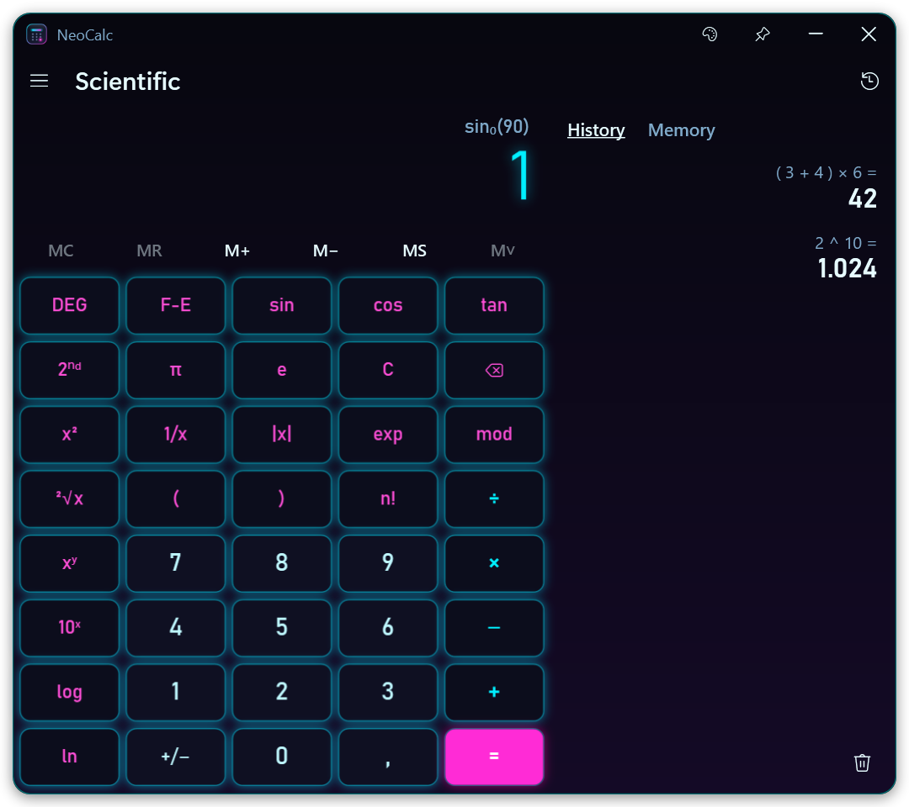
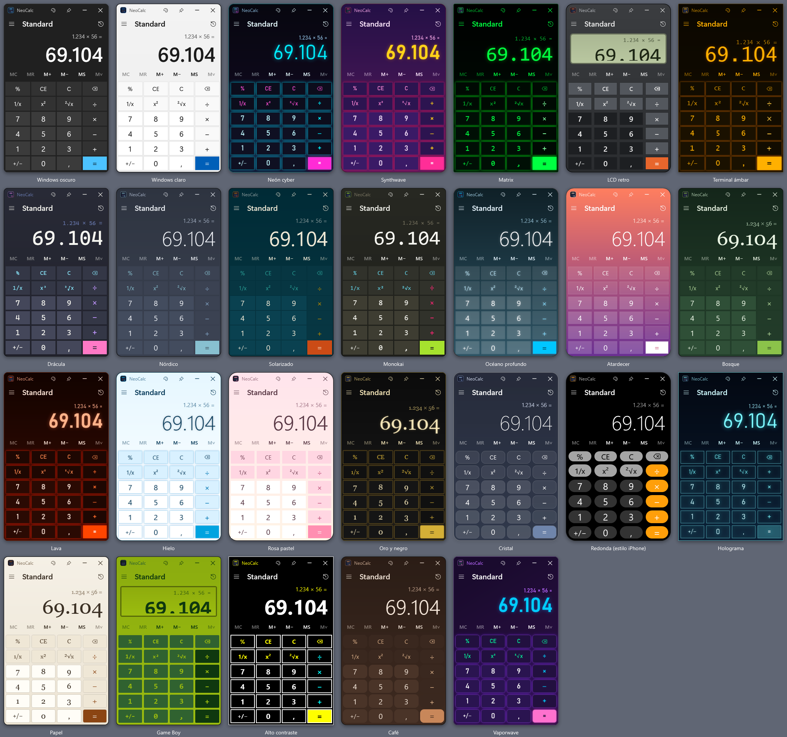
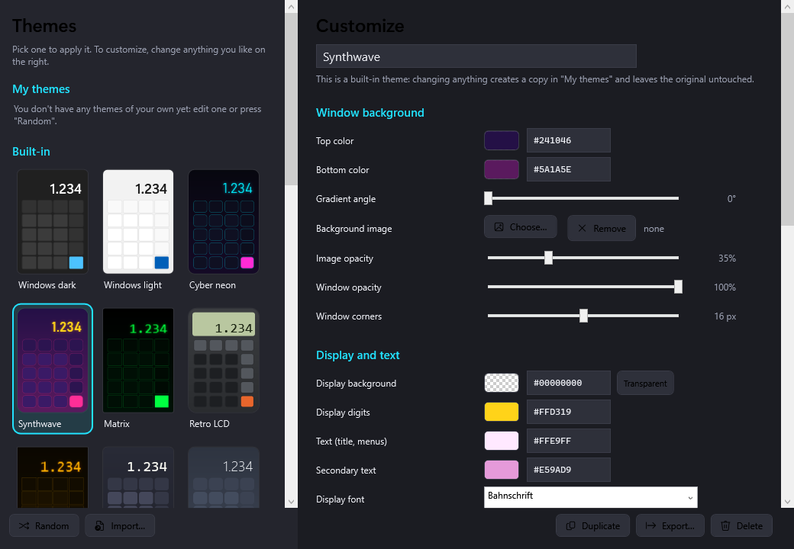
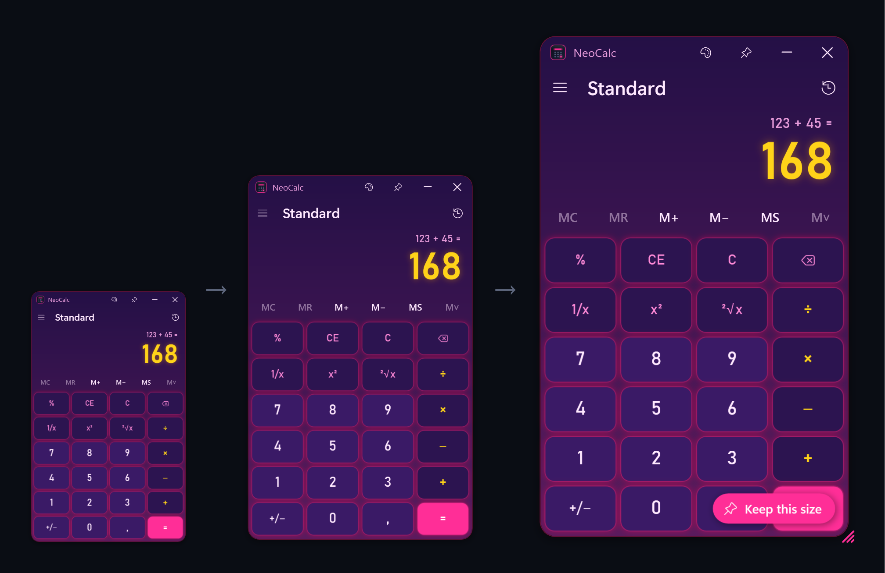

Windows app · free
The Windows calculator, your way
Standard and scientific calculator that works just like the one in Windows — with 26 built-in themes and an editor to design your own: colors, gradients, fonts, round keys, neon glow and more.

What it does
Everything you expect from the Windows calculator, plus a look you choose.
Standard & scientific
Behaves like Windows: chained operations, repeat with =, the same %. Scientific mode adds precedence, parentheses, trigonometry, logs, powers, roots and n!.
26 themes
Windows dark and light, Cyber neon, Synthwave, Matrix, Retro LCD, Dracula, Game Boy, Hologram, Glass, iPhone-style round keys and many more.
Theme editor
Change every color, gradient, background image, font, corner, spacing and glow with a live preview. Or press Random for a surprise.
History & memory
MC, MR, M+, M−, MS and a full history — beside the keypad on a wide window, on top of it on a narrow one.
Always on top
Keep it above other windows while you work, and pin it to the taskbar with an icon in your theme's colors.
Share your themes
Export a theme to a small .neocalc.json file and import themes made by others.
Make it yours
Pick a built-in theme and tweak it — your changes go into a copy under “My themes”, so the originals are always there.


Any size you like
Drag the corner handle and the whole calculator grows or shrinks — keys, digits and text, from half its normal size up to full screen. When you let go, press Keep this size and NeoCalc will always open that way. You can also do it from the ☰ menu: Always open at this size and Reset size.

Keyboard shortcuts
| Alt+1 · Alt+2 | Standard · Scientific |
| Ctrl+T · Ctrl+H | Themes · History |
| Ctrl+M / R / P / Q / L | MS · MR · M+ · M− · MC |
| Esc · Del · Backspace | C · CE · delete digit |
| F9 · R · @ · Q | +/− · 1/x · square root · x² |
| Ctrl+C · Ctrl+V | Copy · Paste |
Get NeoCalc
Download NeoCalc.exe, save it anywhere and open it. No installation, nothing running in the background. The source code is on GitHub and builds with the C# compiler included in Windows.
The app isn't code-signed yet, so Windows SmartScreen may warn you the first time: click “More info → Run anyway”. NeoCalc makes no internet connections and collects no data; settings stay in %APPDATA%\NeoCalc on your computer.